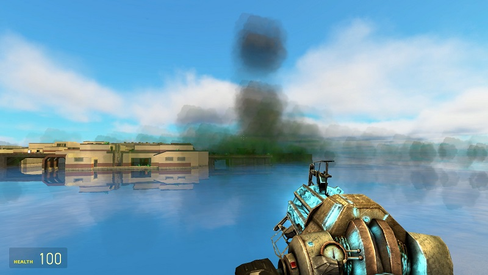
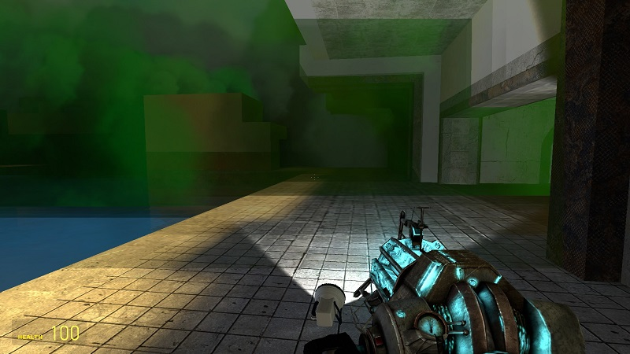
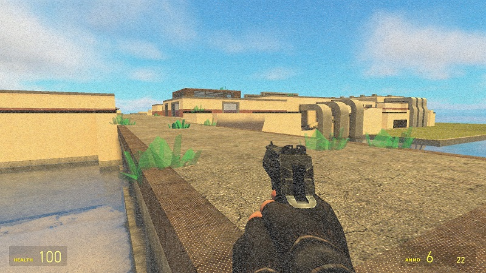

This is an explosion effect captured, after I detonate a community-developed bomb in the game Garry's Mod. I like the design, artistic and technical aspects, and the richness of details of this visual effect. After the detonation, it spawns smoke that is green in the center, but blends to black at the edge. The color and density fades out further along the radius. For the smoke effect, it is created using some particle systems. I'm not sure about how a particle system works, but I'm guessing that it spawns a lot of small and simple geometries in the 3D space. These small geometries should be somewhat transparent, and together as a whole they create the smoke effect. The effect looks different depending on the camera view, because the particles exist in a 3D space. Furthermore, the light does affect how the smoke look like, although not in the best way. An image below shows the result.

What makes this bomb more interesting is that, it creates an aftermath, as shown by the image below. The aftermath is a combination of different visual effects. For one part, it spawns some geometries on the grounds, which are green and transparent, and look like some kinds of crystals. For another part, the developer intends these crystals to be toxic or radioactive, and creates a screen effect. It changes some part of the pixels on the screen to grey, in a random and noisy way. The final results really makes the player feel being radiated.

I will try to make a more attractive webpage next time, if I have more time!